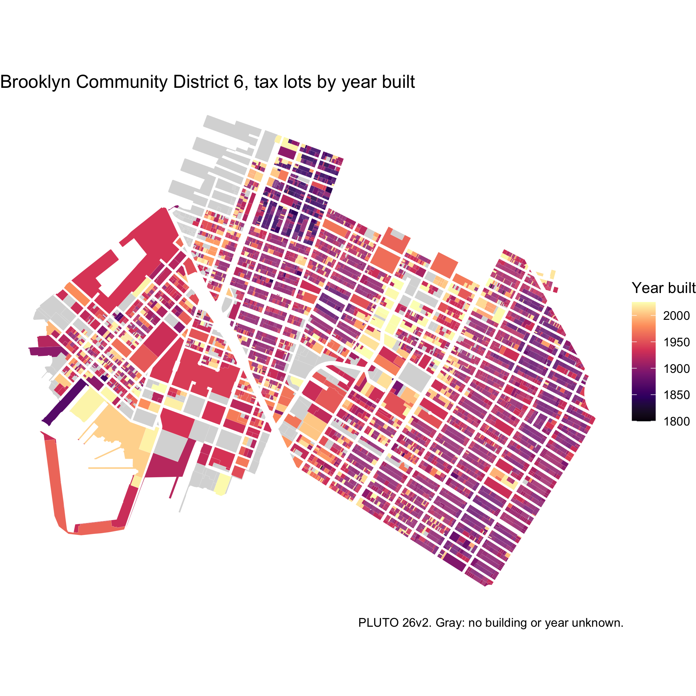

The nycpluto package provides the New York City Department of City Planning’s Primary Land Use Tax Lot Output (PLUTO), release 26v2 (August 2026). There is one record for each of the city’s 858,284 tax lots, with 97 fields covering land use, buildings, zoning, ownership, and assessed value, plus the lot polygon from MapPLUTO. The data are stored as a GeoParquet file and accessed via duckplyr, so you query only the rows and columns you need.
Installation
You can install the development version of nycpluto from GitHub with:
# install.packages("pak")
pak::pak("kjhealy/nycpluto")What’s included
Tax lots
nyc_pluto() returns a duckplyr-backed lazy data frame. Use dplyr verbs to query it and collect() to bring results into R. Column names are PLUTO’s own field names in lower case.
nyc_pluto() |>
select(-geometry)
#> The duckplyr package is configured to fall back to dplyr when it encounters an
#> incompatibility. Fallback events can be collected and uploaded for analysis to
#> guide future development. By default, data will be collected but no data will
#> be uploaded.
#> ℹ Automatic fallback uploading is not controlled and therefore disabled, see
#> `?duckplyr::fallback()`.
#> ✔ Number of reports ready for upload: 78.
#> → Review with `duckplyr::fallback_review()`, upload with
#> `duckplyr::fallback_upload()`.
#> ℹ Configure automatic uploading with `duckplyr::fallback_config()`.
#> duckdb is storing downloaded extensions and secrets under ~/.duckdb:
#> ℹ /Users/kjhealy/.duckdb
#> This persists across sessions and is shared with the DuckDB CLI and other clients.
#> ℹ Run duckdb(shared_home = FALSE) to use a temporary directory instead.
#> ℹ See ?duckdb_storage for details and alternatives.
#> # A duckplyr data frame: 97 variables
#> borough block lot cd bct2020 bctcb2020 ct2010 cb2010 schooldist council
#> <chr> <int> <int> <int> <chr> <chr> <chr> <chr> <chr> <int>
#> 1 MN 1 10 101 1000500 100050000… 5 1000 02 1
#> 2 MN 1 100 101 1000500 100050000… 5 0002 <NA> 1
#> 3 MN 1 101 101 1000100 100010010… 1 1001 02 1
#> 4 MN 1 111 101 1000500 100050010… 5 1000 02 1
#> 5 MN 1 112 101 1000500 100050010… 5 1000 02 1
#> 6 MN 1 150 101 1000500 100050010… 5 1008 02 1
#> 7 MN 1 201 101 1000100 100010010… 1 1000 02 1
#> 8 MN 1 301 101 1031703 103170300… 317.03 0001 <NA> 1
#> 9 MN 1 401 101 1031703 103170300… 317.03 0001 <NA> 1
#> 10 MN 2 1 101 1000900 100090010… 9 1025 02 1
#> # ℹ more rows
#> # ℹ 87 more variables: zipcode <chr>, firecomp <chr>, policeprct <int>,
#> # healthcenterdistrict <int>, healtharea <int>, sanitboro <chr>,
#> # sanitdistrict <chr>, sanitsub <chr>, address <chr>, zonedist1 <chr>,
#> # zonedist2 <chr>, zonedist3 <chr>, zonedist4 <chr>, overlay1 <chr>,
#> # overlay2 <chr>, spdist1 <chr>, spdist2 <chr>, spdist3 <chr>,
#> # ltdheight <chr>, splitzone <chr>, bldgclass <chr>, landuse <chr>, …nyc_pluto_to_sf() turns collected rows into an sf object, with lot polygons (the default) or points. nyc_pluto_path() gives the path to the GeoParquet file for use with arrow, DuckDB, or GDAL directly.
Lookup tables and changes
nyc_pluto_land_use_df
#> # A tibble: 11 × 3
#> landuse description bldgclasses
#> <chr> <chr> <chr>
#> 1 01 One & Two Family Buildings A*, B*, Z0
#> 2 02 Multi-Family Walk-Up Buildings C0, C1, C2, C3, C4, C5, C6,…
#> 3 03 Multi-Family Elevator Buildings D0, D1, D2, D3, D4, D5, D8,…
#> 4 04 Mixed Residential & Commercial Buildings C7, D6, D7, K4, O8, R8, R9,…
#> 5 05 Commercial & Office Buildings G8, GU, GW, H1, H2, H3, H4,…
#> 6 06 Industrial & Manufacturing E*, F*, L*, RW
#> 7 07 Transportation & Utility G2, G3, G4, G5, G9, T*, U*,…
#> 8 08 Public Facilities & Institutions H8, I*, M*, N*, P2, P3, P5,…
#> 9 09 Open Space & Outdoor Recreation P4, P6, Q*, Z8
#> 10 10 Parking Facilities G0, G1, G6, G7, RG, RP, Z2
#> 11 11 Vacant Land V*
nyc_pluto_bldg_class_df
#> # A tibble: 225 × 4
#> bldgclass description landuse source
#> <chr> <chr> <chr> <chr>
#> 1 A0 Cape cod 01 DOF
#> 2 A1 Two stories - detached sm or mid 01 DOF
#> 3 A2 One story - permanent living quarter 01 DOF
#> 4 A3 Large suburban residence 01 DOF
#> 5 A4 City residence one family 01 DOF
#> 6 A5 One family attached or semi-detached 01 DOF
#> 7 A6 Summer cottage 01 DOF
#> 8 A7 Mansion type or town house 01 DOF
#> 9 A8 Bungalow colony - cooperatively owned land 01 DOF
#> 10 A9 Miscellaneous one family 01 DOF
#> # ℹ 215 more rows
nyc_pluto_changes_df
#> # A tibble: 42,955 × 7
#> bbl field old_value new_value type reason version
#> <chr> <chr> <chr> <chr> <int> <chr> <chr>
#> 1 1000010301 lotarea 0 241719 1 Zero … 26v2
#> 2 1000010401 lotarea 0 246896 1 Zero … 26v2
#> 3 1000020001 ownername NYC DSBS NYC DEPA… 1 Norma… 19v2
#> 4 1000020003 ownername NYC DSBS NYC DEPA… 1 Norma… 19v2
#> 5 1000020023 ownername NYC DSBS NYC DEPA… 1 Norma… 19v2
#> 6 1000030001 ownername NYC PARKS DEPT NYC DEPA… 1 Norma… 22v3
#> 7 1000030002 ownername NYC PARKS DEPT NYC DEPA… 1 Norma… 22v3
#> 8 1000030003 ownername NYC PARKS DEPT NYC DEPA… 1 Norma… 22v3
#> 9 1000060001 ownername PARKS AND RECREATION (GE… NYC DEPA… 1 Norma… 19v2
#> 10 1000070027 yearbuilt 1900 1828 2 LPC y… 20v1
#> # ℹ 42,945 more rowsExample: land use by borough
nyc_pluto() |>
summarise(
lots = n(),
lot_area = sum(lotarea, na.rm = TRUE),
.by = c(borough, landuse)
) |>
collect() |>
left_join(nyc_pluto_land_use_df, by = "landuse") |>
mutate(share = lot_area / sum(lot_area), .by = borough) |>
filter(landuse %in% c("01", "03", "09", "11")) |>
select(borough, description, share) |>
tidyr::pivot_wider(names_from = borough, values_from = share)
#> # A tibble: 4 × 6
#> description QN BX BK SI MN
#> <chr> <dbl> <dbl> <dbl> <dbl> <dbl>
#> 1 Vacant Land 0.0702 0.0633 0.0346 0.162 0.0753
#> 2 Open Space & Outdoor Recreation 0.180 0.305 0.288 0.216 0.225
#> 3 One & Two Family Buildings 0.341 0.165 0.221 0.339 0.0148
#> 4 Multi-Family Elevator Buildings 0.0376 0.0815 0.0583 0.00825 0.146Example: a map of lots
Lots in Brooklyn Community District 6 (Park Slope, Carroll Gardens, Red Hook), by year built.
library(sf)
bk6 <- nyc_pluto() |>
filter(cd == 306L) |>
select(bbl, yearbuilt, landuse, geometry) |>
collect() |>
nyc_pluto_to_sf()
bk6 |>
mutate(yearbuilt = na_if(yearbuilt, 0L)) |>
ggplot() +
geom_sf(aes(fill = yearbuilt), color = "white", linewidth = 0.02) +
scale_fill_viridis_c(option = "magma", na.value = "gray85") +
labs(
fill = "Year built",
title = "Brooklyn Community District 6, tax lots by year built",
caption = "PLUTO 26v2. Gray: no building or year unknown."
) +
theme_void()
Data sources
- NYC Department of City Planning, PLUTO and MapPLUTO, release 26v2. MapPLUTO is the shoreline-clipped file geodatabase.
- NYC Open Data, PLUTO, for the 1,597 lots not in the clipped MapPLUTO, and the PLUTO Change File.
- NYC Department of Finance, building class descriptions from the Annualized Calendar Sales Update data dictionary.